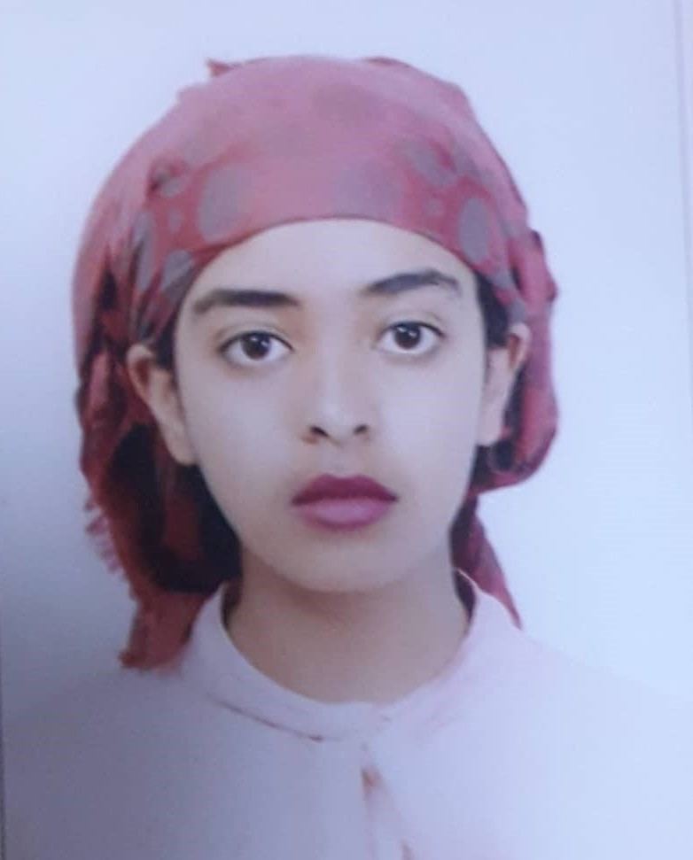

EKRAM YASSIN
0927948484 | ekramyassin90@gmail.com | Linkedin Profile

Objective
2 plus years of experience on networking, Windows server, Active directory domain services and antivirus
security. Enthusiastic IT professional eager to contribute to team success as well as enterprise platforms and
solutions through hard work, attention to detail and excellent organizational skills.
Work Experience
Walia Technologies
Sep 2023 - Current
Deputy Project Manager
- Supply, Installation and Comissioning of Electronic Document Management System project at Ethiopian
pharmaceuticals supply (Ongoing).
Walia Technologies
June 2022 - Current
Network Engineer
- Successfully delivered Network and System optimization project at Debark University.
- Network and system optimization project at Injibara University (Ongoing).
Walia Technologies
Sep 2021 - June 2022
Enterprise Engineer
- Successfully delivered Deployment of Active directory domain services project for AASTA.
- Successfully delivered Installation and Configurtion of Kaspersky Antivirus Security project for Bole printing.
Education
Hard Skills
- Coordinating projects by closely working with the designated project manager
- Configure and install network devices and services
- Troubleshoot network problems
- IP address auditing
- Installation, configuration and administration of Office365 products
- Configuration of DHCP, DNS and active directory
- Providing helpdesk support for end customers by permanently set at their premises
Soft Skills
- Teamwork and Collaboration: ⭐️⭐️⭐️⭐️⭐️
- Leadership: ⭐️⭐️⭐️⭐️⭐️
- Problem solving skills: ⭐️⭐️⭐️⭐️⭐️
- Verbal and written communication: ⭐️⭐️⭐️⭐️⭐️
Certifications
- CCNA Routing and switching